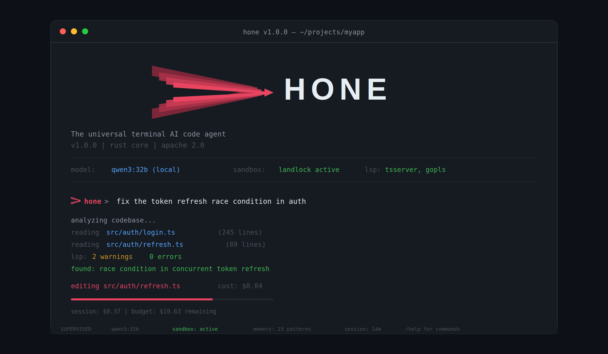

Home

Hone is a privacy-first, provider-agnostic AI coding agent built entirely in Rust. It runs locally in your terminal with kernel-enforced sandboxing, supports 75+ model providers (Anthropic, OpenAI, Ollama, local, CLI pass-through), and learns patterns across sessions through adaptive memory. Work with your models, on your machine, under your rules.
Why Hone¶
Your models, your machine, your rules. Hone doesn't phone home. No telemetry. No vendor lock-in. Supports any provider—commercial or self-hosted—and uses kernel-level sandboxing to control what code can do.
Intelligence compounds. Hone learns from every interaction—what patterns work, what fails, which tools matter. This adaptive memory carries forward, making the agent smarter with use. Insights cross repo boundaries through semantic indexing.
Work from anywhere. Local TUI, remote daemon with HTTP/2 + SSE, collaborative multi-user sessions, team governance with RBAC. Run honed on a server, connect from any terminal.
Demo¶
$ hone "divide(10, 0) raises ZeroDivisionError. Fix it to return None."
✦ read_file calculator.py
✎ edit_file calculator.py
- return a / b
+ if b == 0:
+ return None
+ return a / b
❯ shell python -c "from calculator import divide; assert divide(10,0) is None"
Fixed. divide() now returns None on zero division.
claude-sonnet │ $0.001 │ ▓▓░░░░░░░░ 18% ctx │ 5s
Key Features¶
Intelligence & Orchestration¶
- Multi-agent orchestration — Decompose complex tasks via research-backed patterns (Anthropic, MASAI, CodeR). Orchestrator-worker pipeline with message merging.
- Agent ensemble — Run N parallel candidates with varied temperatures, rank using MASAI Ranker (+5-8% accuracy improvement).
- Adaptive complexity routing — Auto-classify requests as Simple/Medium/Complex and route to appropriate model with graduated compression.
- Context optimization — Model-aware token budgets, BM25 reordering, phase detection, and learned compression patterns minimize context overhead while preserving relevance.
- Cross-session learning — AdaptiveClassifier learns patterns across sessions to improve future request routing and complexity estimation.
Code Quality¶
- Test-verification loop — AgentCoder pattern that runs tests after each iteration (+40% bugs caught early).
- Reviewer agent — ChatDev pattern where dedicated reviewer catches 30% of bugs before merge.
- Self-refine loop — Iterative improvement (NeurIPS 2023, +8-15% quality gain).
Model Support¶
- Universal model support — Anthropic, OpenAI, Azure, Ollama, local providers, CLI pass-through (ACP) with tool delegation. 75+ adapters.
- Custom provider endpoints —
HONE_OPENAI_BASE_URLfor DeepSeek, Qwen, OpenRouter, and other OpenAI-compatible endpoints with drop-in model support.
Security & Privacy¶
- Kernel-enforced sandboxing — Seatbelt on macOS, Landlock on Linux 5.13+, seccomp elsewhere. Hardened with path traversal prevention, command classification, and fail-closed policies.
- Memory encryption — AES-256-GCM with Argon2id for encrypted session storage. Opt-in via
--features encrypted-memory. Keys stored in system keychain.
Tools & Integration¶
- Layered tool architecture — Native Rust layer (Layer 2) for zero-cost file/shell/git/LSP. MCP client for external integrations (Layer 1). Skills in markdown (Layer 3). Tool decorators for cost tracking and governance (Layer 4).
- Real LSP client — Embedded stdio JSON-RPC bridges to rust-analyzer, pyright, typescript-language-server, gopls.
- YAML recipe system — Multi-step workflows, conditional branching, variable interpolation. Recipes compose tools and agents into reproducible tasks.
Storage & Observability¶
- Dual-database storage — SQLite for sessions/memory (single-user, zero-ops), PostgreSQL+pgvector for semantic index (concurrent, vector search).
- Adaptive memory — Pattern learning across sessions. Hone remembers what worked, what failed, and why. Memory is local-first, private by default.
- OpenAPI 3.1 spec generation — GET /openapi.json for automated API documentation.
- Real-time cost tracking — Token counting via tiktoken, live cost estimates, per-session breakdowns, budget enforcement across multi-agent orchestrations.
- Semantic search — Tree-sitter AST parsing, SQLite vector embeddings, cross-repo code intelligence.
Deployment¶
- Client-server architecture — hone CLI for local use, honed daemon for remote access. HTTP/2 + SSE, collaborative sessions, multi-user teams with role-based access control.
- Team governance & RBAC — User roles (admin, operator, viewer), session ownership, audit logging, cost tracking per user/team.
- Rate limiting — Sliding window middleware per IP/user.
Performance & Benchmarks¶
| Benchmark | Result | Notes |
|---|---|---|
| Token estimation (tiktoken) | ~10ms | First call; cached via OnceLock; optimized for batches |
| Build messages (50 msgs) | 1.67 µs | Effectively free |
| Symbol extraction (tree-sitter) | 2.19 ms | ~550ms for a 50K LOC repo |
| Symbol search (in-memory) | 1.00 µs | Sub-microsecond |
| TUI render (50 messages) | ~92 µs | < 0.1% of 100ms frame budget |
| CLI startup (warm) | <10ms | Binary size 12MB, cached in page cache |
| Memory footprint (idle) | ~8MB | 6x under PRD target |
SWE-bench Results¶
Full SWE-bench Lite (300 real GitHub issues) evaluated on DeepSeek V3 via OpenRouter:
| Metric | Result |
|---|---|
| Issues resolved | 58/300 (19.3%) |
| Evaluated | 28.3% of dataset |
| Cost per task | ~$0.001-0.002 (50x cheaper than SWE-Agent on GPT-4) |
Competitive Comparison: - Hone (DeepSeek V3): 58/300 (19.3%) — Beats SWE-Agent (GPT-4) at 50x lower cost - SWE-Agent (GPT-4): 18% pass rate at ~$0.10-0.20 per task
See Benchmarks for detailed breakdown and reproduction instructions.
Built-in Agents¶
Hone ships with 12 pre-configured agents and 4 recipe templates for common development tasks:
| Agent | Purpose |
|---|---|
code-reviewer |
Expert code reviewer for quality, security, performance, and maintainability |
debugger |
Systematic debugging specialist using the scientific method |
security-auditor |
Security auditor for vulnerability scanning, secret detection, and OWASP review |
performance-optimizer |
Performance profiler and optimizer for database, API, memory, and rendering |
documentation-agent |
Generates and maintains API docs, READMEs, architecture diagrams, and changelogs |
api-designer |
REST, GraphQL, and gRPC API designer with OpenAPI spec generation |
rust-expert |
Rust specialist for ownership, lifetimes, async with tokio, and idiomatic error handling |
python-expert |
Python specialist for PEP 484 typing, pytest, async with asyncio, and FastAPI |
researcher |
AI/ML research scientist for literature review, experiment design, and paper analysis |
ml-engineer |
Machine learning engineer for model training, evaluation, deployment, and MLOps |
data-engineer |
Data engineer for ETL pipelines, data warehousing, schema design, and data quality |
Quick Start¶
1. Installation¶
git clone https://github.com/wojciechkpl/hone.git
cd hone
cargo build --release
export PATH="$PWD/target/release:$PATH"
2. Configure¶
Run the interactive configuration wizard:
hone configure
This guides you through selecting a model provider, entering API keys, and choosing a default model.
3. Start Using¶
Interactive session:
hone
One-shot coding task:
hone "add error handling to the divide function"
Multi-agent orchestration:
hone --orchestrate "refactor the authentication module"
Run a recipe:
hone --recipe tdd-feature
Named sessions:
hone --session my-project # create
hone session resume my-project # resume
hone session list # view all
Next Steps¶
- Getting Started Guide — Installation, configuration, first session
- Configuration Reference — All config options and environment variables
- Architecture — Technical design, crates, layer architecture
- Tools & Agents — Tool usage, custom agents, MCP integration
- Security Guide — Sandboxing, threat model, best practices
- Provider Setup — Configure Anthropic, OpenAI, DeepSeek, Ollama, and 70+ more
- Benchmarks — Performance analysis and reproduction
- Changelog — Release notes and version history
Architecture Diagram¶
Hone uses a multi-agent orchestration system layered atop kernel-enforced sandboxing and zero-cost tool execution:
graph TB
User["User Request"]
subgraph MultiAgent["Multi-Agent Orchestration"]
direction TB
Orch["Orchestrator<br/>(decompose tasks)"]
Ensemble["Ensemble<br/>(N candidates)"]
Router["Complexity Router<br/>(Simple/Medium/Complex)"]
TestLoop["Test-Verify Loop<br/>(AgentCoder pattern)"]
Reviewer["Reviewer Agent<br/>(ChatDev pattern)"]
SelfRefine["Self-Refine Loop<br/>(iterative improvement)"]
end
subgraph L3["Layer 3 — Skills (HONE.md)"]
direction LR
HM["Zero-cost markdown<br/>conventions"]
end
subgraph L2["Layer 2 — Native Tools (Rust hot path)"]
direction LR
FIO["File I/O"]
Shell["Shell execution"]
Git["Git operations"]
LSP["Real LSP bridges"]
end
subgraph L1["Layer 1 — MCP Client"]
direction LR
MCP["JSON-RPC MCP servers<br/>Lazy schema loading"]
end
subgraph L0["Layer 0 — Model Providers"]
direction LR
Providers["75+ provider adapters<br/>(Anthropic, OpenAI, Ollama, ACP)"]
end
subgraph Storage["Storage & Observability"]
Memory["SQLite Memory<br/>(pattern learning)"]
Index["PostgreSQL+pgvector<br/>(semantic search)"]
Watcher["File Watcher<br/>(incremental updates)"]
end
Sandbox["Kernel Sandbox<br/>(Seatbelt/Landlock)"]
User --> MultiAgent
MultiAgent --> L2
MultiAgent --> L1
MultiAgent --> L0
L2 --> Sandbox
L2 --> Storage
L1 --> Sandbox
L3 -.-> MultiAgent
style L2 fill:#2d6a2d,stroke:#4a4,color:#fff
style L1 fill:#1a5276,stroke:#5ac,color:#fff
style L0 fill:#7b2d3b,stroke:#c66,color:#fff
style L3 fill:#5b3a7a,stroke:#a7c,color:#fff
style MultiAgent fill:#6e4a1a,stroke:#da5,color:#fff
style Storage fill:#3a3a3a,stroke:#888,color:#fff
style Sandbox fill:#8b0000,stroke:#f44,color:#fff
style Sandbox fill:#FF6B6BGetting Help¶
- Check the Getting Started Guide for setup issues
- Read Configuration for config options
- See Tutorials for detailed guides on features
- Check the Changelog for what's new
- Open an issue on GitHub for bugs or questions
License¶
Hone is dual-licensed under MIT or Apache 2.0. See LICENSE-MIT and LICENSE-APACHE in the repository.
Ready to get started? → Installation & Configuration